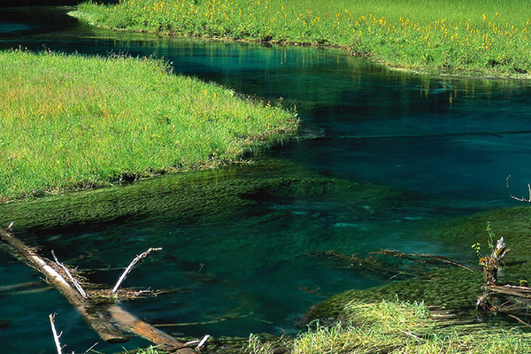
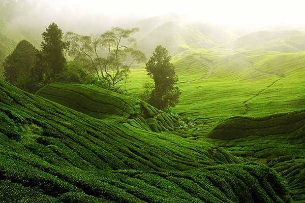
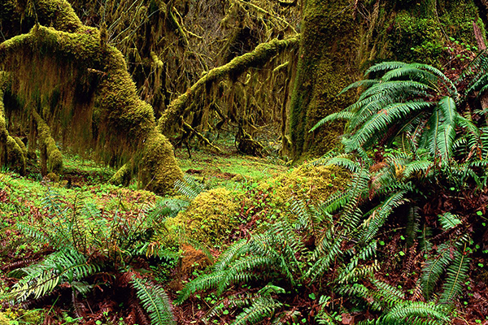
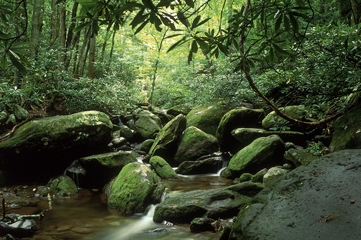

回首頁
|
關於我們
|
網站導覽
|
常見問題
|
意見信箱
|
RSS訂閱
行政院農業委員會 林務局
影音資訊平台
分類瀏覽
主題瀏覽
時間軸檢視
空間分佈檢視
影音檢索
簡易查詢
進階查詢
查詢說明
主題展示
當期主題展示
歷次主題清單
森林小知識
森林小百科
森林小叮嚀
影音使用說明
相關網站
登出
首頁
>
影音檢索
>
進階查詢
進階搜尋
批次收藏
批次匯出
進階選單放這邊兒
檢索紀錄
步道
338
森林
12998
水鳥濕地觀察
18729
共 20930筆
清除記錄
資料類型
影片
照片
主題類別
生態保育
林業發展
森林育樂發展
動物觀察
拍攝地點
太魯閣國家公園
墾丁濕地
鹽水濕地
大霸尖山尖字下面
山林 野趣 文化情
2014/2
生態保育
麥覺明、林務局、超級飄髮哥

山林 野趣 文化情
2014/2
生態保育
麥覺明、林務局、超級飄髮哥

山林 野趣 文化情
2014/2
生態保育
麥覺明、林務局、超級飄髮哥
山林 野趣 文化情
2014/2
生態保育
麥覺明、林務局、超級飄髮哥

山林 野趣 文化情
2014/2
生態保育
麥覺明、林務局、超級飄髮哥

山林 野趣 文化情
2014/2
生態保育
麥覺明、林務局、超級飄髮哥
山林 野趣 文化情
2014/2
生態保育
麥覺明、林務局、超級飄髮哥
山林 野趣 文化情
2014/2
生態保育
麥覺明、林務局、超級飄髮哥
1
2
3
4
5
6